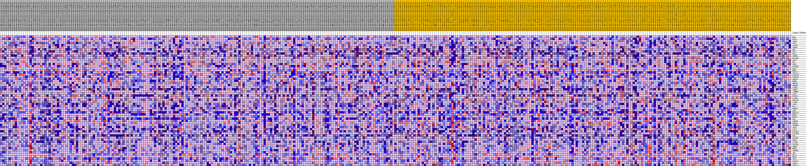
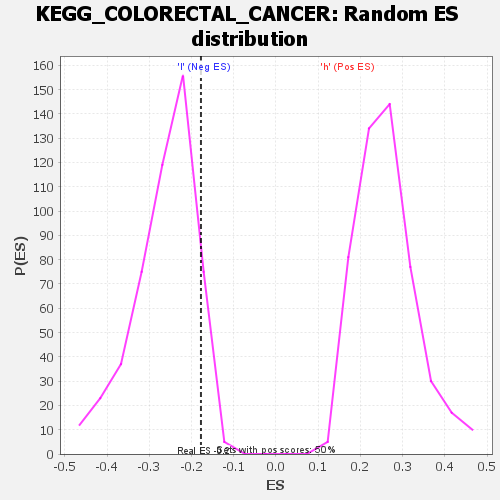

| | | Dataset | VCAN.VCAN.cls#h_versus_l.VCAN.cls#h_versus_l_repos |
| Phenotype | VCAN.cls#h_versus_l_repos |
| Upregulated in class | l |
| GeneSet | KEGG_COLORECTAL_CANCER |
| Enrichment Score (ES) | -0.1777546 |
| Normalized Enrichment Score (NES) | -0.674266 |
| Nominal p-value | 0.9243028 |
| FDR q-value | 1.0 |
| FWER p-Value | 1.0 |
Table: GSEA Results Summary
 Fig 1: Enrichment plot: KEGG_COLORECTAL_CANCER
Fig 1: Enrichment plot: KEGG_COLORECTAL_CANCER
Profile of the Running ES Score & Positions of GeneSet Members on the Rank Ordered List
| SYMBOL | TITLE | RANK IN GENE LIST | RANK METRIC SCORE | RUNNING ES | CORE ENRICHMENT | | 1 | BAD | na | 799 | 0.102 | 0.0232 | Yes |
| 2 | KRAS | na | 1433 | 0.089 | 0.0447 | Yes |
| 3 | ARAF | na | 1647 | 0.086 | 0.0725 | Yes |
| 4 | APC2 | na | 1671 | 0.085 | 0.1036 | Yes |
| 5 | CASP9 | na | 2617 | 0.075 | 0.1141 | Yes |
| 6 | TGFB1 | na | 3259 | 0.069 | 0.1281 | Yes |
| 7 | MYC | na | 4368 | 0.061 | 0.1304 | Yes |
| 8 | RAC2 | na | 5310 | 0.055 | 0.1336 | Yes |
| 9 | RAC3 | na | 5872 | 0.051 | 0.1423 | Yes |
| 10 | TGFB3 | na | 6308 | 0.049 | 0.1525 | Yes |
| 11 | RALGDS | na | 6334 | 0.049 | 0.1700 | Yes |
| 12 | AKT2 | na | 7025 | 0.045 | 0.1742 | Yes |
| 13 | BAX | na | 9352 | 0.034 | 0.1445 | No |
| 14 | TP53 | na | 11306 | 0.025 | 0.1185 | No |
| 15 | PIK3R5 | na | 11413 | 0.025 | 0.1257 | No |
| 16 | RAF1 | na | 12300 | 0.021 | 0.1175 | No |
| 17 | RHOA | na | 12980 | 0.019 | 0.1121 | No |
| 18 | TCF7L1 | na | 13386 | 0.017 | 0.1111 | No |
| 19 | PIK3CD | na | 13702 | 0.016 | 0.1113 | No |
| 20 | PIK3R3 | na | 13890 | 0.015 | 0.1136 | No |
| 21 | SMAD3 | na | 16940 | 0.005 | 0.0603 | No |
| 22 | MSH6 | na | 17707 | 0.003 | 0.0476 | No |
| 23 | MAPK8 | na | 18521 | 0.001 | 0.0333 | No |
| 24 | SMAD4 | na | 22993 | -0.005 | -0.0457 | No |
| 25 | CCND1 | na | 23061 | -0.006 | -0.0449 | No |
| 26 | TGFB2 | na | 23289 | -0.006 | -0.0467 | No |
| 27 | CTNNB1 | na | 23324 | -0.006 | -0.0450 | No |
| 28 | AKT1 | na | 23629 | -0.007 | -0.0478 | No |
| 29 | BIRC5 | na | 24135 | -0.009 | -0.0539 | No |
| 30 | CASP3 | na | 24855 | -0.011 | -0.0630 | No |
| 31 | MAP2K1 | na | 25365 | -0.012 | -0.0678 | No |
| 32 | AXIN1 | na | 28245 | -0.020 | -0.1127 | No |
| 33 | LEF1 | na | 31839 | -0.030 | -0.1668 | No |
| 34 | BCL2 | na | 32032 | -0.030 | -0.1591 | No |
| 35 | MAPK9 | na | 32100 | -0.030 | -0.1491 | No |
| 36 | JUN | na | 32224 | -0.031 | -0.1399 | No |
| 37 | MAPK10 | na | 32612 | -0.032 | -0.1351 | No |
| 38 | MSH2 | na | 33009 | -0.033 | -0.1301 | No |
| 39 | MAPK1 | na | 33245 | -0.034 | -0.1220 | No |
| 40 | DCC | na | 33532 | -0.034 | -0.1144 | No |
| 41 | GSK3B | na | 34182 | -0.036 | -0.1128 | No |
| 42 | MAPK3 | na | 35627 | -0.040 | -0.1242 | No |
| 43 | TGFBR2 | na | 38548 | -0.048 | -0.1595 | No |
| 44 | AKT3 | na | 38800 | -0.048 | -0.1462 | No |
| 45 | CYCS | na | 39615 | -0.050 | -0.1423 | No |
| 46 | PIK3CG | na | 39795 | -0.051 | -0.1267 | No |
| 47 | PIK3CB | na | 39858 | -0.051 | -0.1089 | No |
| 48 | FOS | na | 40157 | -0.052 | -0.0951 | No |
| 49 | PIK3R2 | na | 40426 | -0.053 | -0.0805 | No |
| 50 | BRAF | na | 40633 | -0.053 | -0.0646 | No |
| 51 | AXIN2 | na | 41814 | -0.056 | -0.0651 | No |
| 52 | PIK3R1 | na | 42920 | -0.060 | -0.0631 | No |
| 53 | SMAD2 | na | 43045 | -0.060 | -0.0431 | No |
| 54 | MSH3 | na | 43328 | -0.061 | -0.0258 | No |
| 55 | TGFBR1 | na | 45266 | -0.067 | -0.0362 | No |
| 56 | APC | na | 45673 | -0.068 | -0.0185 | No |
| 57 | RAC1 | na | 46582 | -0.071 | -0.0087 | No |
| 58 | MLH1 | na | 47234 | -0.073 | 0.0064 | No |
| 59 | TCF7 | na | 49277 | -0.080 | -0.0009 | No |
| 60 | PIK3CA | na | 49464 | -0.081 | 0.0257 | No |
| 61 | APPL1 | na | 53063 | -0.102 | -0.0018 | No |
| 62 | TCF7L2 | na | 54045 | -0.113 | 0.0221 | No |
Table: GSEA details [plain text format]

Fig 2: KEGG_COLORECTAL_CANCER
Blue-Pink O' Gram in the Space of the Analyzed GeneSet

Fig 3: KEGG_COLORECTAL_CANCER: Random ES distribution
Gene set null distribution of ES for KEGG_COLORECTAL_CANCER